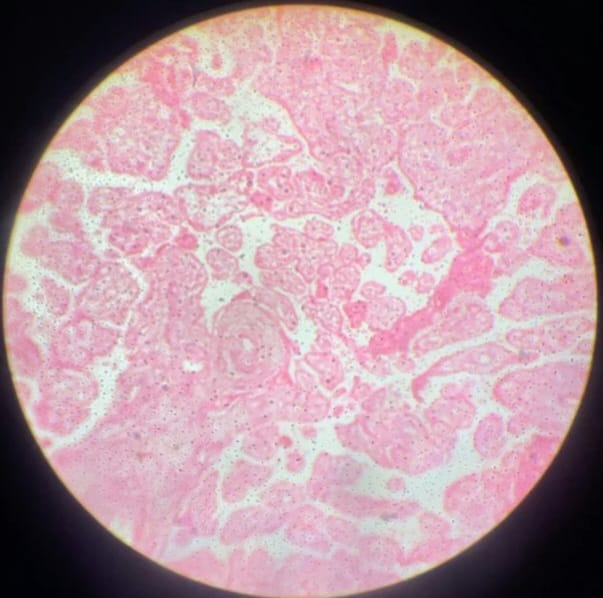

Visualizador de Lâminas
Use o scroll do mouse ou toque duplo para aplicar zoom. Arraste para navegar pela imagem em alta resolução.

Visão Geral
Compreende a placenta, o cordão umbilical, o âmnio e o córion. Garantem a nutrição, respiração, excreção e proteção imunológica/mecânica do feto durante a gestação.
Placenta
Órgão misto materno-fetal. Formada pelo córion frondoso (vilosidades coriônicas fetais) e decídua basal (materna). Vilosidades são revestidas por sinciciotrofoblasto e citotrofoblasto.
Cordão Umbilical
Revestido por epitélio amniótico. Contém duas artérias umbilicais e uma veia umbilical imersas em geleia de Wharton (tecido conjuntivo mucoso rico em ácido hialurônico).
Técnica de Coloração
H&E evidencia o sinciciotrofoblasto multinucleado em púrpura/rosa e a geleia de Wharton em rosa pálido e frouxo. Tricrômico de Masson cora o colágeno das vilosidades.